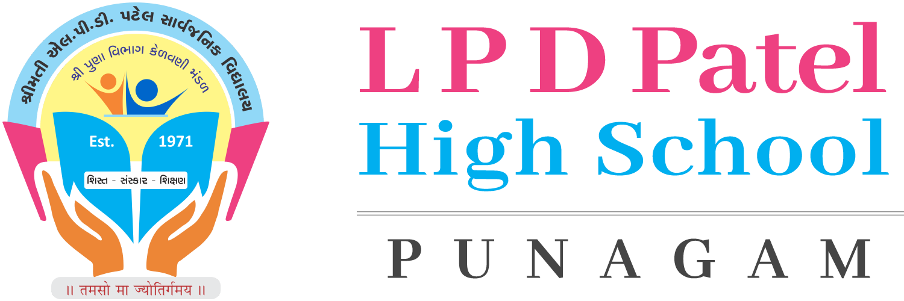
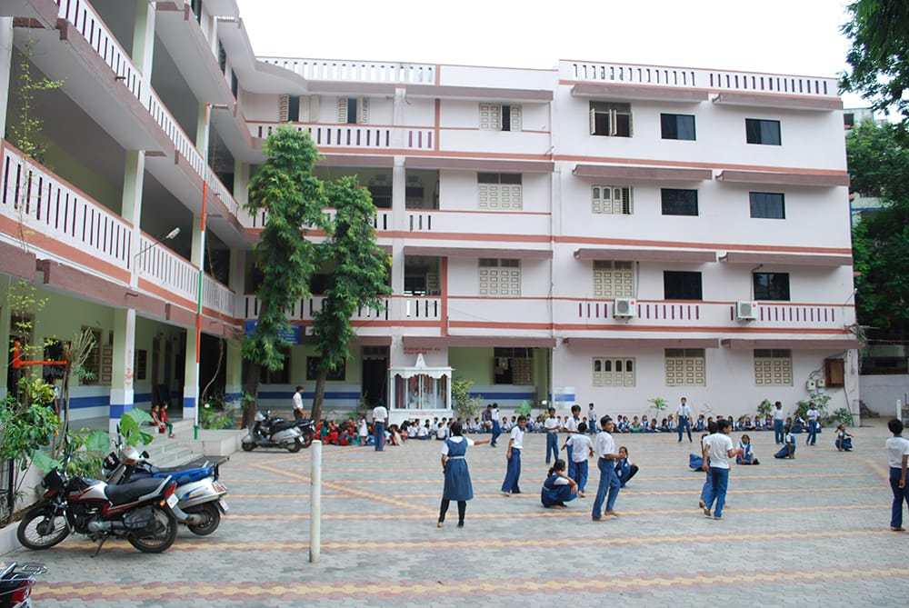
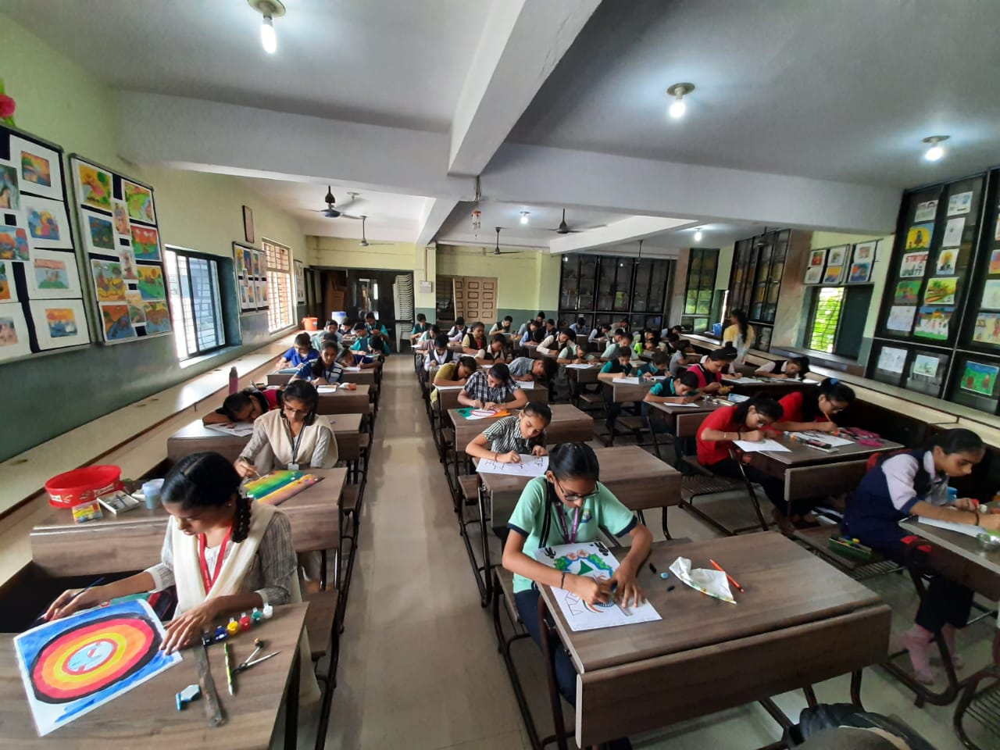

➤ માત્ર સેવાભાવથી કાર્યરત સંચાલક મંડળ
➤ સર્વાંગીણ પ્રવૃત્તિઓમાં વિદ્યાર્થીને કેન્દ્રસ્થાન
➤ રાજ્ય એવોર્ડ વિજેતા આચાર્ય
➤ રાજ્ય સરકારના અનેક એવોર્ડથી સન્માનિત શાળા
➤ સંપૂર્ણ લાયકાત ધરાવતો શિક્ષણ અને વહીવટી સ્ટાફ
➤ ચિત્રકલા ખંડ, વર્ચ્યુઅલ ક્લાસરૂમ, કોમ્પ્યુટર લેબ, વિજ્ઞાન ખંડ, રમતગમત રૂમ
➤ સંદર્ભ પુસ્તકો ધરાવતું પુસ્તકાલય
➤ પવિત્ર પ્રાર્થનામંદિર અને માતા શારદાનું મંદિર
➤ આધુનિક ટેકનોલોજીથી સજ્જ શાળા અને વર્ગખંડો
➤ ટેકનોલોજીથી દસ્તાવેજ વ્યવસ્થાપન
➤ તેજસ્વી વિદ્યાર્થીઓને ઇનામથી સન્માન
➤ ગરીબ વિદ્યાર્થીઓ માટે સહાય: પુસ્તકો, નોટબુક, યુનિફોર્મ
➤ ધોરણ 10 અને 12માં દર વર્ષે 100% પરિણામ
➤ વિદ્યાર્થીઓની ઉંમરને અનુરૂપ માર્ગદર્શન
➤ પ્રેમ, પ્રોત્સાહન અને પ્રેરણાથી ભરપૂર શાળાપરિવાર
અમારી શાળા દર વર્ષે ધોરણ ૧૦ અને ૧૨માં ૧૦૦% પરિણામ મેળવે છે. આ સફળતાનું શ્રેય શિક્ષકોના માર્ગદર્શન અને વિદ્યાર્થીઓની મહેનતને જાય છે.


તમામ ફોટા જુઓ